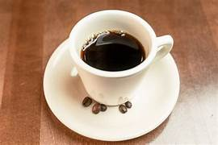
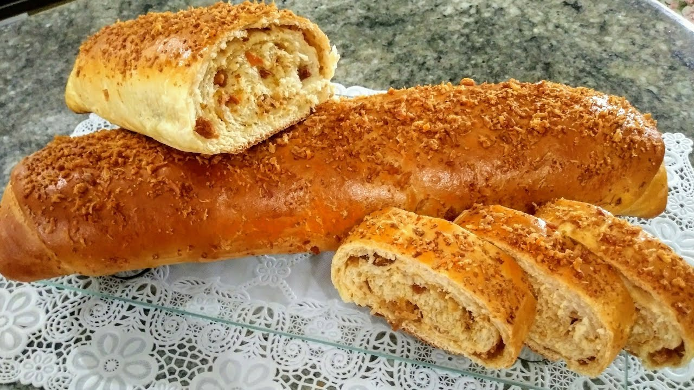
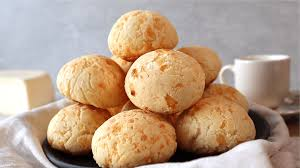
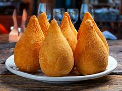
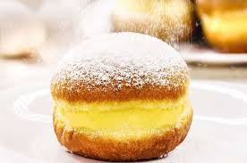
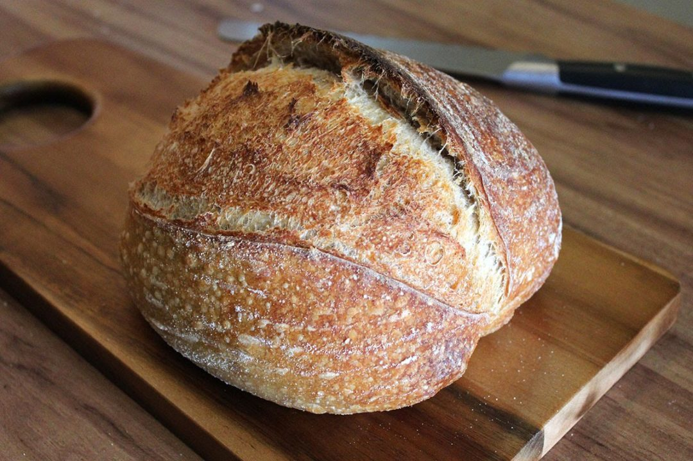

Tradição e satisfazendo o paladar das pessoas desde 1980.
Nossa visão:
Levar e continuar a cultura da panificação ao paladar dos brasileiros
Diferenciais:
Nossas massas são feitas com fermentação natural e a qualidade garantida de mais de 100 anos de suceesso.
Oferecemos serviços para aqueles que não tem tempo de cuidar de sua alimentação.
Nossos produtos principais
Pão Francês
Preço R$ 0,85 cada
Pão quentinho e crocante feito com nosso fermento 100% natural
0

Café
Preço R$ 4,00 cada
Café preto e sem açucar. Ótimo para despertar.
0

Pão de torresmo
Preço R$ 25,00 cada
Baum, baum demais. Recheado de torresmo tanto por dentro quanto por fora. De tamanho grande
0
Bolo
Preço R$ 25,00 cada
Bolos de diversos sabores. Chocolate, cenoura com cobertura de chocolate, morango, baunilha e côco.
0

Pão de queijo
Preço R$ 4,00 cada
Para mineiro não botar defeito. Feito de polvilho azedo e parmesão.
0

Coxinha
Preço R$ 7,00 cada
Coxinha de frango tradicional.
0

Sonho
Preço R$ 10,00 cada
Nosso carro chefe e tradição. Massa de fermentação natural com recheio sabor baunilha.
0
Localização e horários:
Estamos na Rua dos Dragões, 666 - Bairro Terra dos Homens Livres, São Paulo - SP. 12345-123
Dias
Horários
Segunda a Sexta feiras
5 - 22 hrs
Sábado
8 - 22 hrs
Domingo e feriados
8 - 22 hrs
Oferecemos almoço todos os dias
11 - 16 hrs
Oferecemos jantar todos os dias
19 - 22 hrs
Entregas a domicílio ou aplicativo
10 - 22 hrs
Fazemos entrega a domicílio e atendemos pelo Ifood
Conhecer é poder
O que é fermento natural e qual sua vantagem sobre o
industrializado
Quando você começa a fazer pão caseiro, em algum momento vai se deparar com o fermento natural. Conheça
o poder dessas incríveis leveduras selvagens.
O fermento natural é conhecido por diversos nomes: levain (fermento em francês, se pronuncia “levãn”),
sourdough starter (inglês), lievito naturale ou pasta madre (italiano), masa madre (espanhol), massa lêveda
(Portugal) ou massa azeda. Um pão com esse fermento leva mais tempo para ser feito, possui um aspecto
rústico, uma casca crocante, um miolo cheio de alvéolos irregulares e um sabor levemente azedo e
incomparável.

Já falamos aqui sobre a levedura Saccharomyces cerevisiae e os tipos de fermentos biológicos
industrializados. Pois o fermento natural é a mesma levedura em seu estado selvagem, combinado com
lactobacilos que mantêm a acidez e evitam que outras bactérias indesejadas se desenvolvam.
Origem do fermento natural
A fermentação natural está longe de ser uma novidade, é um processo utilizado desde a produção dos
primeiros pães. O registro mais antigo é de 3.700 AC, mas sua origem provavelmente está relacionada com o
início da agricultura. Foi somente nos últimos 150 anos que o fermento industrializado foi desenvolvido e
logo passou a ser amplamente empregado na produção de pães.
Como fazer o fermento natural
Para produzir o fermento natural temos que misturar farinha de trigo com água e deixar a natureza fazer seu
trabalho de reprodução dos microrganismos. Devemos adicionar farinha e água diariamente durante 7 a 10 dias.
Alguns métodos utilizam frutas (abacaxi, maçã ou uva), iogurte ou mel para potencializar a fermentação
Benefícios do pão com fermento natural
Caso você ainda não esteja convencido de se aventurar nesse mundo, aqui vão algumas vantagens do pão com
fermento natural:
Seu sabor é incomparável ao do pão tradicional;
Possui um índice glicêmico mais baixo do que outros pães;
Sua digestão é mais fácil, até mesmo para aqueles que são sensíveis ao glúten, devido a sua fermentação
mais lenta;
Pode ser armazenado por mais tempo, pois o ácido acético que inibe o crescimento de bolor é produzido na
fabricação de fermento;
Aumenta o teor de bactérias benéficas no intestino;
Possui uma série de nutrientes devido a complexidade de sua composição.